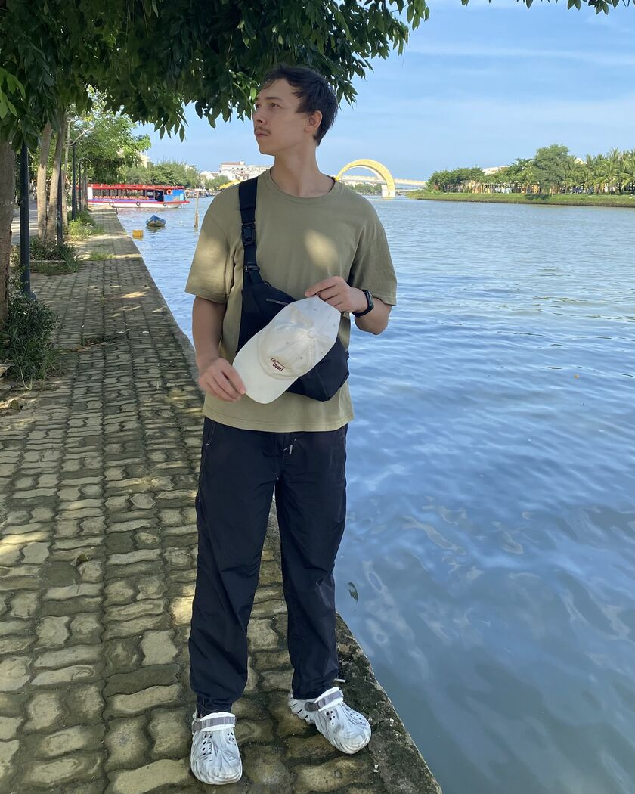

Free · Open source · Nothing is uploaded
See what your photo tells strangers
Location, time, phone, faces and QR codes. Unpin finds them and takes them out before you post.
- Choose or drop a photo. JPEG, PNG, WebP or iPhone HEIC.
- See what it gives away. Faces and codes are marked.
- Download the clean copy. Checked again before saving.

Face A known bridge Tourist boatIMG_1994.jpginvisible on the photo
- Where15.87677, 108.33640 · Hoi An
- When3 August 2026, 16:05
- With whatiPhone 11 · iOS 26.5.2
This photo couldn't be opened
Blur something else: pick the box tool and drag on the photo. Street signs, house numbers, car plates and screens are worth a look.
Fix a box: with the arrow tool, drag it to move it, or drag a corner to resize it.
Keep something visible: point at its box, or tap it, and press ×.
Still looking for faces far away…
What this photo tells
What Unpin checks,
and where it stops
Three kinds of leaks, three ways to deal with them.
Removed from the file
Every time, nothing to set up.
- Location
- Time
- Phone
- Serial numbers
- Names
- Hidden previews
- AI prompts
Found and covered
Tiny, turned or damaged ones can be missed. Check the preview before you save.
- Faces
- QR codes
- Barcodes
Up to you
Apps can guess the place from the background alone. Draw a box over these to blur them.
- Street signs
- Car plates
- House numbers
- Window view
- Reflections
- Screens
- Parcels
- Keys and cards
Made with AI? Unpin reads AI labels and names the tool. A screenshot or re-save removes the label.
Questions
Is my photo uploaded anywhere?
No. Everything happens in this browser tab, and the page is not allowed to connect to any other server.
Does it work offline?
Yes, once the parts are on your device. The page and metadata cleaning are saved on your first visit. The face finder (15 MB) and the HEIC decoder (3 MB) are saved the first time you use them, or right now with the button below.
Does it lower the quality?
Not for JPEG, PNG and WebP: Unpin removes the data blocks and leaves the picture untouched. If you cover something, the picture is saved again at high quality. An animation is saved as a still picture of its first frame, because that's the frame Unpin checks. HEIC and AVIF are saved as JPEG.
Do Instagram and Threads remove location anyway?
Big social apps remove it from public posts, but plenty of ways to share don't: sending as a file, email, cloud links, some messengers and marketplaces. And the faces and codes on the picture stay everywhere.
Can it tell if a picture was made with AI?
Only from labels in the file. ChatGPT, Adobe Firefly, Google, Meta and others add Content Credentials or an AI label, and Stable Diffusion tools write their settings into PNG files; Unpin reads these and names the tool. Screenshots, messengers and re-saving often remove the labels, so “no AI label” doesn't mean the picture is real. Unpin doesn't guess from the pixels.
Why are Content Credentials removed?
Content Credentials (C2PA) are signed over the whole file, so they can't stay valid once other data is removed, and they can include a location or a preview. The “made with AI” label is removed too: the saved file carries only the picture. An invisible watermark in the pixels, such as Google's SynthID, stays.
Can it find everything?
No. It finds the hidden data, faces, QR codes and barcodes. Street signs, plates and landmarks are up to you.
Can data be hidden inside the picture itself?
Yes, if someone put it there on purpose. When Unpin cleans a JPEG or WebP without saving it again, it keeps the original compressed picture data, so data deliberately added inside it may stay in the downloaded file. Phones and cameras don't do this. PNG picture data is checked: if it holds more than the picture, the PNG is saved again. Anything coded into the visible pixels themselves stays in any case.
Check a photo now
Free, in your browser. Nothing is uploaded.